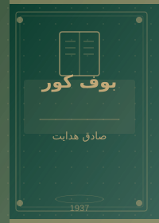
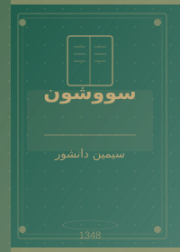
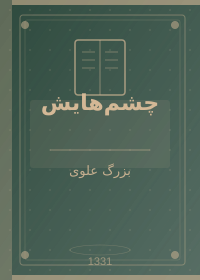
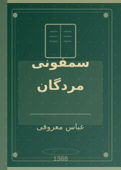
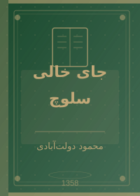

درباره ادبیات کلاسیک ایران
ادبیات فارسی با سابقهای بیش از هزار سال، یکی از ثروتمندترین میراثهای فرهنگی بشری است. از حماسههای فردوسی تا رمانهای مدرن هدایت و دانشور، این ادبیات همواره آینهای بوده است که ایرانیان در آن تصویر خود را دیدهاند.
«زبان فارسی دریایی است که هر کس به اندازه ظرفیتش از آن مینوشد — شعرا دریای موجخیز را دیدهاند و نثرنویسان رودخانههای آرام آن را.» — برگرفته از نوشتههای منتقدان ادبی
📚 پنج اثر ماندگار

بوف کور
بوف کور با جمله در زندگی زخمهایی هست که مثل خوره روح را در انزوا میخورد و میتراشد
آغاز میشود. این رمان کوتاه اما عمیق، یکی از
بحثبرانگیزترین آثار ادبیات مدرن فارسی است که
در هند (بمبئی) به صورت پلیکپی منتشر شد.
داستان راویای است که روی جلد قلمدان نقاشی میکند و میان رویا و بیداری سرگردان است. هدایت در این اثر از سوررئالیسم و روانکاوی فرویدی بهره گرفته است.
موضوع اصلی: مرگ، عشق ناکام، بیگانگی از جامعه، ابهام میان واقعیت و رویا.

سووشون
سووشون نخستین رمان بلند نوشتهشده توسط یک زن ایرانی است.
داستان در شیراز دوران جنگ جهانی دوم میگذرد و روایت زندگی
زری
و همسرش یوسف
است که در برابر اشغالگران ایستادگی میکند.
این رمان به عنوان نقطه عطفی در ادبیات زنان ایران شناخته میشود. نام «سووشون» اشاره به مراسم سوگ سیاووش در فرهنگ ایرانی دارد.

چشمهایش
رمانی درباره عشق یک نقاش به زنی با چشمانی استثنایی.
بزرگ علوی در این اثر فقط از عشق بلکه از مقاومت سیاسی
و هویت ایرانی نیز سخن میگوید.
چشمهایش را میتوان رمانی درباره آزادی و آرزو دانست که در فضای اختناق دهههای ۲۰ و ۳۰ شمسی نوشته شده است.

سمفونی مردگان
روایت خانوادهای در شمال ایران در چند نسل متوالی. معروفی ساختار رمانش را بر اساس سمفونی موسیقی بنا نهاده — هر فصل مثل یک حرکت موسیقایی است.
معروفی در این رمان نشان میدهد که چگونه تاریخ در درون خانوادهها جریان مییابد.
این کتاب بارها سانسور و ممنوع شد اما راه خود را به دست مخاطبان باز کرد.

جای خالی سلوچ
مرگان، مادری روستایی که شوهرش ناگهان ترکش کرده، تنها میماند با سه فرزند و زندگیای پر از فقر و سختی. دولتآبادی با این رمان چهره ایران روستایی را به تصویر میکشد.
این اثر یکی از مهمترین رمانهای فارسی معاصر است که بارها به زبانهای مختلف ترجمه شده است.
📋 جدول اطلاعات کامل کتابهای ایرانی
| نام کتاب | نویسنده | سال تولد نویسنده | سال انتشار | موضوع | تعداد صفحه (تقریبی) |
|---|---|---|---|---|---|
| بوف کور | صادق هدایت | ۱۲۸۱ ه.ش | ۱۹۳۷ م | بیگانگی، مرگ | ۱۰۰ صفحه |
| سووشون | سیمین دانشور | ۱۳۰۰ ه.ش | ۱۳۴۸ ه.ش | مقاومت، عشق | ۳۵۰ صفحه |
| چشمهایش | بزرگ علوی | ۱۲۸۳ ه.ش | ۱۳۳۱ ه.ش | عشق، سیاست | ۲۸۰ صفحه |
| سمفونی مردگان | عباس معروفی | ۱۳۳۶ ه.ش | ۱۳۶۸ ه.ش | خانواده، تاریخ | ۴۵۰ صفحه |
| جای خالی سلوچ | محمود دولتآبادی | ۱۳۱۹ ه.ش | ۱۳۵۸ ه.ش | فقر، مادری | ۵۰۰ صفحه |
| کلیات سعدی | سعدی شیرازی | حدود ۶۰۰ م | قرن ۱۳ م | اخلاق، عشق، حکمت | بیش از ۱۰۰۰ صفحه |
| دیوان حافظ | حافظ شیرازی | حدود ۷۲۷ م | قرن ۱۴ م | عشق، عرفان، می | ۵۰۰+ صفحه |
| شاهنامه | فردوسی | حدود ۳۴۰ م | ۱۰۱۰ م | حماسه، اسطوره | ۱۰۰۰۰۰ بیت |
| این فهرست گزیدهای از آثار ادبیات فارسی است و جامع نمیباشد. | |||||
🖊️ نویسندگان و شاعران بزرگ ایران
شاعران کلاسیک:
- فردوسی (فردوسی توسی)
- سراینده شاهنامه — حماسه ملی ایران. بیش از ۳۰ سال عمر خود را صرف این اثر کرد.
- سعدی (سعدی شیرازی)
- نویسنده گلستان و بوستان. استاد نثر آهنگین فارسی و حکمت عملی.
- حافظ (حافظ شیرازی)
- شاعر غزلهای عاشقانه و عارفانه. دیوانش در هر خانه ایرانی یافت میشود.
- مولوی (مولانا رومی)
- سراینده مثنوی معنوی. عارف و شاعری که مرزهای فرهنگی را درنوردیده است.
نویسندگان مدرن:
- صادق هدایت — پدر ادبیات مدرن ایران
- سیمین دانشور — نخستین رماننویس زن ایرانی
- محمود دولتآبادی — رماننویس بزرگ معاصر
- عباس معروفی — نویسنده سمفونی مردگان
- بزرگ علوی — نویسنده چشمهایش
- احمد محمود — نویسنده «همسایهها»
- سیمین بهبهانی — ملکه غزل ایران